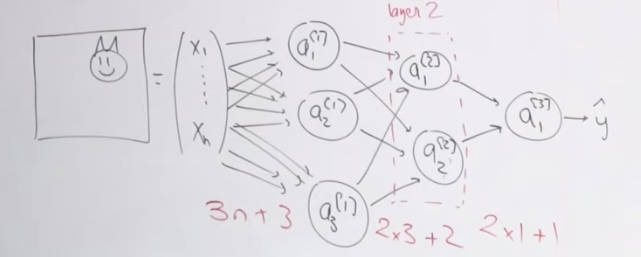
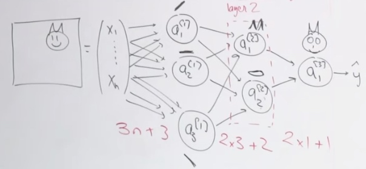

We will start from logistic regression.
Deep Learning
- Computatinal expensive. Use GPU to compute.
- Data available has been growing after the growing of Internet.
- Algorithm
Logistic Regression
Goal One
Goal: find cats in image. We will get an 1 for presence of a cat, and get a 0 for absense of a cat. (Assume only a cat)
In computer science, a colored image can be recorded as a 3D matrix.
For 64 * 64 image, the matrix would be 64X64X3. 3 is for the RGB channel, red, green and blue.
We will take all the numbers in the matrix and flatten them in a vector.
Once I have a vector input, I can operate the logistici regression.
x is (64*64*3,1) = 12,288
w would be (1, 12288)
Once we have the process, we are gonna to train.
- Initialize our parameters. w and b(weights and bias)
- Find the optimal w,b.
- Then we use the \(\bar{y} = \sigma(wx + b)\) to predict.
In machine learning, we often know the function that we going to use to predict, but we do not know the parameters, so we use a proxy to be our loss function. When we manage to minimize the loss function, we will find the right parameters.
The loss function will be \(L = -[ylog\bar{y} + (1-y)log(1-\bar{y})]\)
We want to find w and b to minimize the loss function. And we are going to use the gradient descent algorithm.
\[\left\{\begin{array}{l}
w:=w-\alpha \frac{\partial L}{\partial w} \\
b:=b-\alpha \frac{\partial L}{\partial b}
\end{array}\right.
\]
How many parameters does this model have?
- 12288 weights and 1 bias, which can be counted from drawing by the number of edges + 1. Every circle has a bias, every edge has a weight.
Two Equations
- Neuron = linear + activation. In the example above, the linear part is wx + b and the activation part is sigmoid function.
- model = architecture + parameter. In industry, a good model will have two files, one architecture file and one parameter file.
Goal Two
Second goal would be find cat, lion and iguana in images.
Now we just need to put two more circles here and do the same thing.
\(a_{1}^{[1]}\)
The [1] means the layer. There are three nodes at the first layer. In each layer, neurous do not communicate with each other.
The index one identify the neuron inside the layer.
The parameters would be \(3*12288 + 3\)
What dataset we need to train the logistic regression?
- Images and labels with three animals.(a vector with 3 elements.)
If we add lion, the first neuron could also detect cats. Because neurons do not communicate with each other. We can just train them independently. Also, the sigmoid in one neuron is independent with the sigmoid in another neuron.
It is just three logistic regression yet, we could not call it neuron networks.
If the train dataset does not have enough specific type of data, then that neuron would not get enough trained. So we should use a new model like put weight on specific neuron.
We could also create interaction among them to let the nodes learn together.
Goal 3.0(Softmax Multi-class Network)
Add constraint that add unique animal on an image. We just assume at least there is one class.
Instead, we will use softmax function as output.
Also we change the noation. \(Z_1^{[1]}\) is the linear part of the first neuron.
We use the softmax is because the sum of the outputs of the network have to sum up to 1.
We will get the probabilistic distribution over all the classes. If there is no cat and no lion, then there should very likely be an iguana.
The parameter number is the same as the second.
Now we are going to modify the loss function
Let's see the loss function of softmax function. Which is called softmax cross entropy.
\[L_{CE}=-\sum_{k=1}^{3} y_{k} \log \hat{y}_{k}
\]
Goal 4.0
Predict the age of cat.
So we will not use the sigmoid function, instead, use the ReLU. (rectified linear units.)
For linear task we have two loss functions. One is \(|\hat{y} - y|\), the other is \(||\hat{y} - y||^2\) in L2 norm.
In optimization, the L2 norm is much easier to optimize in a regression task than it is for a classification task and vice versa.
Neural Networks
Our first goal: Given an image --> Cat vs. No cat.

The parameters would be 3n+3, x*3 + 3, 2*1 + 1. So most of the parameters are in input layer.
Each neuron in one layer will not connect to each other.
Input layer: the first layer.
Output layer: the last layer.
Hidden layer: layers between input layer and putput layer.
The first layer is going to understand the fundamental concepts of images, which is the edges in picture.
The input layer will send what they found to second layer. And neuron in second layer will use the adges that these guys found to figure out that there is there ears, mouths and stuff like that.
The output layer may going to construct the face.

House price prediction example.
Inputs:
- # bedromms
- size
- zip code
- wealth of neighbor
We will build a network with three neuron at first layer and one neuron at second layer.
The zipcode and wealth will tell us the scholl quality around that area.
The zipcode is going to tell us if the neighborhood is walkable or not.
The size and the number of bedroom is telling us the family size that can fit in house.
This time we give human knowledge to the network to get the result.
Whereas for the cat, we use fully connected network. That means we will let networks figure these out. That is why the neural networks are called blackbox model.
End to end learning: just give the input and output, then train the whole network. Which is black box model.
Propagation Equation
We do want to change the number of parameters. But the size of b cannot match the size of wx. So we will use broadcasting.
How to design our NN?
- Nobody know the right answer. We have to test it.
- The more data we have, the deeper network we should build.
Optimizing Problem
We need to find several parameters.
Define out loss(one example)/cost(multi example) function.
The cost function would be
\[J(\hat{y},y) = \frac1m \sum^m_{i=1}L^{(i)}
\]
We are going for batch GD. Calculate the cost function. With \(L^{(i)} =-[y^{(i)}log\hat{y}^{(i)}+(1-y^{(i)})log(1-\hat{y}^{(i)})]\)
As for
The complexity is the same.
Backward Propagation
We want to optimize every parameter.
Which w should we start with?
- w3. Because w3 is the closest to the loss function. It is much harder for us to know w1's influence on loss function than w3.
- Once we compute \(\frac{\partial J}{\partial w^{(3)}}\), then we compute \(\frac{\partial J}{\partial w^{(2)}}\).
While doing calculation, we are trying to depend on the ** **.
The chain rule helps al lot.